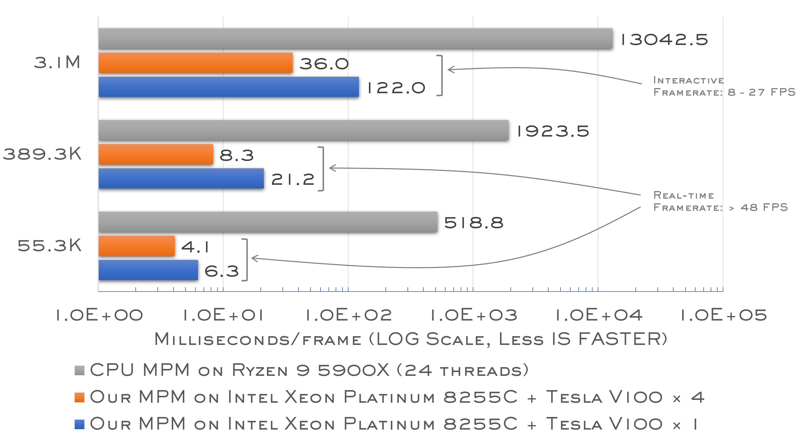

Performance
Compared with a multi-threaded MPM simulator on a CPU, our optimized GPU MPM simulator is two magnitudes faster. For the sand block scenario with 389K particles, we reach a real-time framerate in either one or four GPUs and an interactive framerate for the scenario with 3.1M particles.
Video of Benchmark Scenarios
Abstract
Physics-based simulation has been actively employed in generating offline visual effects in the film and animation industry. However, the computations required for high-quality scenarios are generally immense, deterring its adoption in real-time applications, e.g., virtual production, avatar live-streaming, and cloud gaming. We summarize the principles that can accelerate the computation pipeline on single-GPU and multi-GPU platforms through extensive investigation and comprehension of modern GPU architecture. We further demonstrate the effectiveness of these principles by applying them to the material point method to build up our framework, which achieves 1.7×--8.6× speedup on a single GPU and 2.5×--14.8× on four GPUs compared to the state-of-the-art. Our pipeline is specifically designed for real-time applications (i.e., scenarios with small to medium particles) and achieves significant multi-GPU efficiency. We demonstrate our pipeline by simulating a snow scenario with 1.33M particles and a fountain scenario with 143K particles in real-time (on average, 68.5 and 55.9 frame-per-second, respectively) on four NVIDIA Tesla V100 GPUs interconnected with NVLinks.
BibTex
@article{fei2021principles,
author = {Fei, Yun (Raymond) and Huang, Yuhan and Gao, Ming},
title = {Principles towards Real-Time Simulation of Material Point Method on Modern GPUs},
journal = {arXiv preprint},
volume = {abs/2111.00699},
year = {2021},
url = {https://arxiv.org/abs/2111.00699},
eprinttype = {arXiv},
eprint = {2111.00699}
}